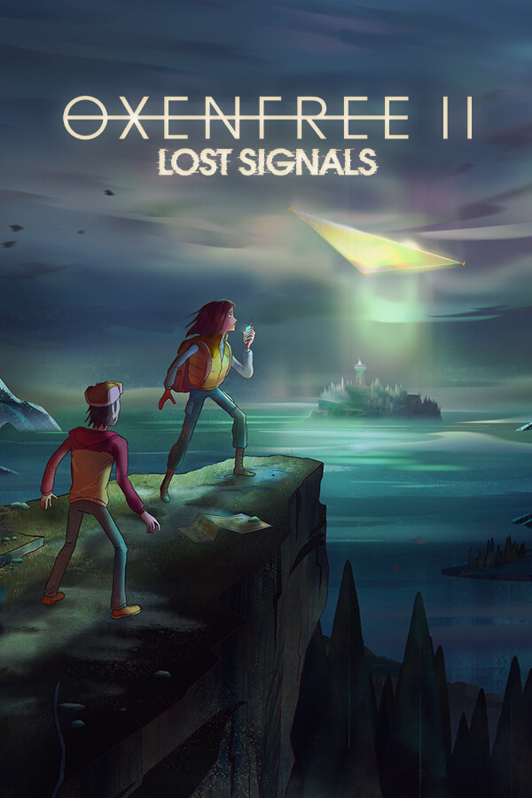

Oxenfree II: Lost Signals
Oxenfree II: Lost Signals
Details
|  | |
| Playtime | Not Played |
| Last Activity | Never |
| Added | 10/26/2024 12:07:27 |
| Modified | 10/26/2024 12:07:40 |
| Completion Status | #Want to Play |
| Library | PlayStation |
| Source | PlayStation |
| Platform | Sony PlayStation 5 |
| Release Date | 7/12/2023 |
| Community Score | 86 |
| Critic Score | 83 |
| User Score | |
| Genre | Adventure Indie |
| Developer | Night School Studio |
| Publisher | Netflix |
| Feature | Achievements Cloud Saves Family Sharing Full Controller Support Single-Player |
| Links | Community Hub Discussions Guides News Store Page PCGamingWiki Achievements |
| Tag | |
Description

TVs turn on and off. Planes lose radar. Radio stations can't broadcast through the static. In the small coastal town of Camena, unnaturally occurring electromagnetic waves are suddenly causing interference with electrical and radio equipment. Reluctantly, Riley Poverly returns to her hometown to investigate the mystery, but what she finds is more than she bargained for.
OXENFREE II: Lost Signals is the mind-bending follow-up to the critically-acclaimed narrative adventure game OXENFREE from Night School Studio. Play it as a standalone story or dive deeper by playing the original – it's up to you. As you play, you'll shape every step of the story through your choices. How you choose to deal with the supernatural events at hand will forever alter the future.

Your choices matter.
Shape everything through your conversations and dialogue choices. Forge a deep friendship with an old acquaintance from high school or opt to ignore a lost fisherman in need. Your choices impact who Riley becomes, your relationships, and the story options available to you at every turn.

Start chatter from anywhere.
Use an all-new walkie talkie conversation system to chat with contacts and uncover useful insights about the mysteries of Camena. Ask for info, check in with the locals, or completely ignore them. It's your call to make. And, it has consequences.

Stop Parentage.
Five years ago on nearby Edwards Island, a few teenagers unwittingly opened a portal, creating a rift between realities and timelines. Now, members of a mysterious cult-like group called Parentage are deliberately trying to open a new portal to pull something out. Who are they? What do they want? Are they trying to contact ghosts?

Tune in to the radio.
Ghostly signals are piercing through the frequencies of Camena. Tap into the eerie sounds and static using OXENFREE's signature radio mechanic. You’ll communicate with the supernatural, manipulate the world, and travel to the past by tuning into time tears: unnatural fissures in the time-space continuum.

Save everyone and everything.
Your future was on the line in OXENFREE and those stakes are even higher in OXENFREE II. Explore, climb, and rappel across Camena’s beautifully treacherous landscape. Take risks and see where it takes you. It might be dangerous. But it could also save the future. Not only for Riley but for everyone.